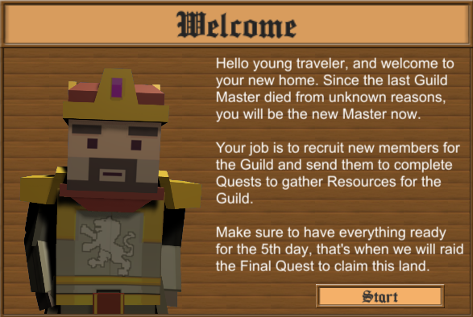
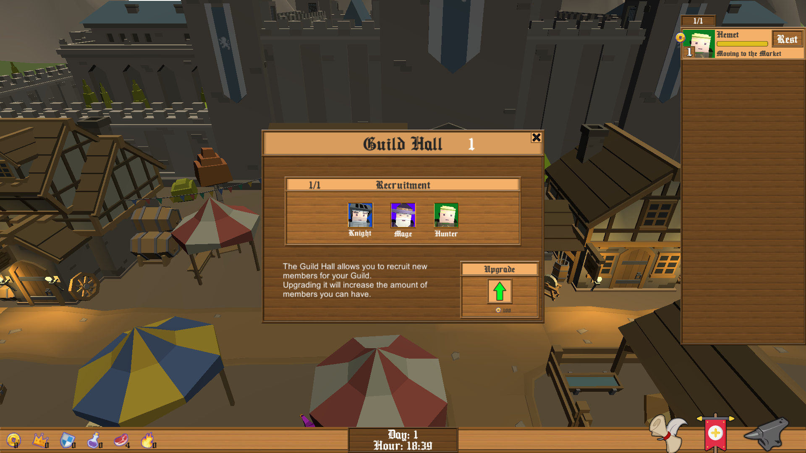
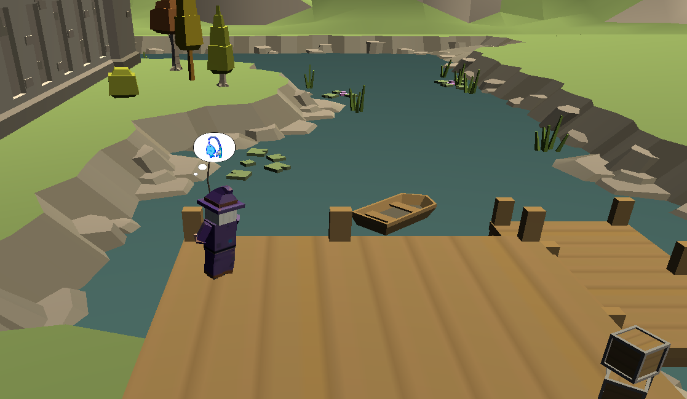
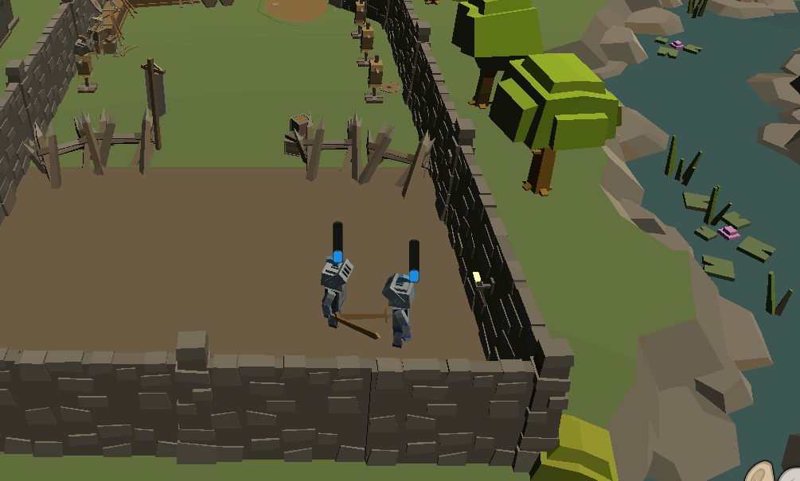
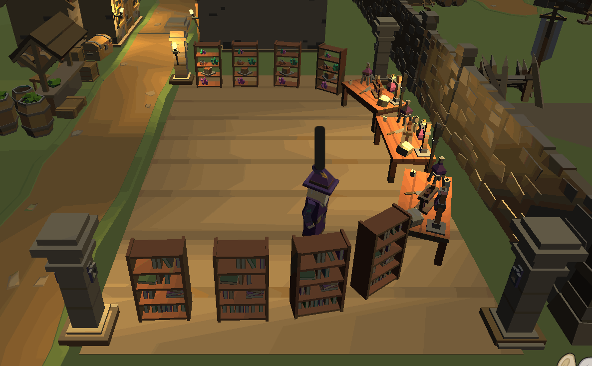
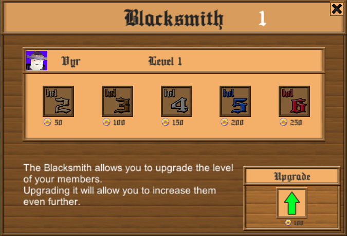
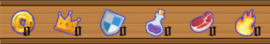

Guild Master
Guild Master is a strategy fantasy game where the player takes control of a collective of heroes who are part of a brotherhood and has to manage them to beat the final dungeon.
The player needs to recruit members for the guild, whom will be able to produce different type of resources. These resources will be used as provisions to send the members to the Dungeon, on different kind of quests, giving them various benefits. Each quest type will favour a specific type of resource to improve it's chance of success.

These Dungeon quests will reward the player with special resources used to upgrade the guild buildings like the hall or blacksmith, allowing access to more members and improvements for them.
Each enemy which can be encountered on a quest is countered by a specific unity, so make sure to bring the perfect party for each quest.
The end goal is to defeat the boss of the dungeon before the day limit.

This game was made with only 2 students for the AI subject of the Bachelor's Degree in Video Game Design and Development at the UPC.
Making this game was an amazing experience, since AI is one of my favorite things about videogames, and also this was the first game where I had full control of the Design, since my colleague didn't have much time due to other subject projects.
In this project, the programming was made by both members of the team, since it was a class project to develop AI, even though I focused a bit more on gameplay and my colleague on UI. This means that some parts of My Contribution weren't developed by myself alone.
My Contribution
Player Interactions
The player is able to:
- Send agents to quest. You can do this by clicking the quest button (Scroll) selecting a mission in the table and assigning memebers by clicking them in the right side member panel. You can also bring provisions with them by clicking the icons in the provision panel.
- Upgrade the guild house and the blacksmith building using the resources gathered by the quests. You can do this by clicking the blacksmith(anvil)/guild hall(banner) buttons and then clicking the green arrow.
- Recuit heroes to expand the guild. You can do this by opening the guild hall panel and selecting the member you want to recruit (if you have slots available)
- Make a member work or rest with the click of the state button in their portrait inside the member list panel.

AI Archetypes
Every agent follows the same Behaviour tree when resting and when they are in quest they do the same, but every agent has it's own FSM when working nested in their Behaviour tree making it behave in a different way.
When resting, the agents recover stamina.
While daylight agents have a 25% of going to 4 different places:
- The market: agent walks around the market and visits 4 diferent spots.
- Fishing: agent walks to the fishing spot, picks a fishing pole and starts fishing.
- The tavern: agent walks to the tavern and enters.
- Walk: agent goes for a walk and visit random spots in the map while chilling.

During night time, an agent has a 55% chance of going to sleep and rest % is divided between the rest of the options above. When in quest, the agent moves to the dungeon and enters in it, when the quest is complete they apear again and a resume.
Knight
While working knights go to the warrior training area, pick up a weapon and try to find a couple, if they have no couple to fight with they fight solo. If someone is free he will fight him.

Mage
Mages go to the Alchemy tower while working, they create potions by going to a recipe shelf and selecting a recipe, then they go to a material shelf and pickup the materials needed, at last they go to the alchemy table and craft the potion and repeat.

Hunter
Hunters while working they gather meat, to do it, they go to the forest and wander for a prey, after they spot one, they kill it and moves towards it, then gather the meat and go again.

Quest System
Quests are randomly generated every new day and have different resources as rewards depending on the difficulty and size of it. There’s one, three, five and ten men quests, also a Quest can be an Adventure or a Bounty. Bounties favor Flame resource as provision, Adventures favor meat.

Each quest has enemies assigned to them, which the group will require to counter to improve their chances of finishing the quest. Each member class counters a different enemy. Warriors counter skeletons. Mages counter orcs. Hunters counter bandits.

The player can assign provisions to the quest to increase success chance and allow Members to heal stamina during it. At the end of a quest, each member with 0 stamina has a great chance of dying and be removed from the game completely.
Game Progression
Each different unit of the game creates a specific resource. These specific resources are then used on the quests that the game generates for the player.
After successfully completing a quest, the player will receive a new set of resource, and those will be used to upgrade the different buildings of the game, recruit new units and improve their level, allowing the player to progress to more difficult quests.

Resources
- Potion: Potions allow a member to heal 50% stamina when it’s stamina drops below 25%. Obtainable from Mage work.
- Meat: Meat greatly increases the success chance of Adventure Quests. Obtainable from Hunter work.
- Flame: Flames greatly increase the success chance of Bounty Quests. Obtainable from Warrior work.
- Gold: Gold is used to upgrade Buildings and level up Members. Obtainable from Quests.
- Shield: Shields are used to upgrade the Blacksmith. Obtainable from Quests.
- Crown: Crowns are used to upgrade the Guild Hall. Obtainable from Quests.
